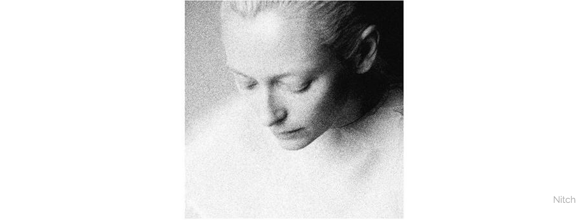
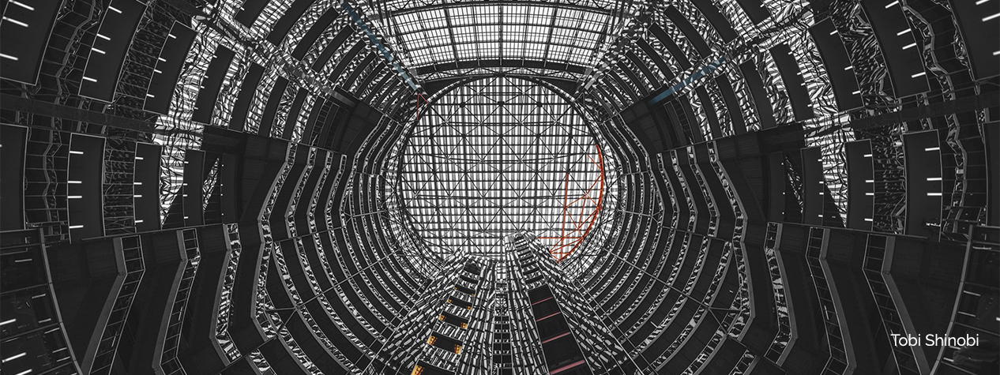
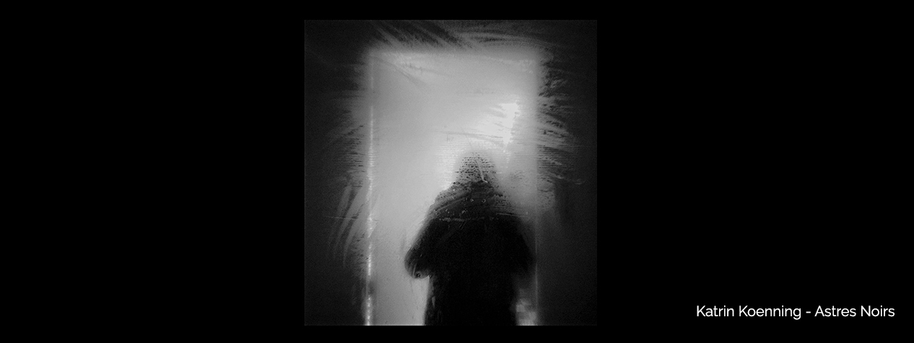

PHOTOGRAPHIE
Mon univers
La photographie m'attire et m'inspire par de nombreux aspects et via de nombreux et non moins différents projets. Ce qui attache mon oeil à une image peut être vraiment différents suivant les méthodes, les recherches, les ambiances, etc. Comme pour le cinéma, les photos qui se veulent racontant une histoire me fascine de par l'exigence du support en terme de narration. Capturer en un instant un récit qui peut être d'une compléxité extrême tout en avouant une enfime partie de cette hsitoire et en laissant tout le reste à l'imaginaire.
L'image explique mieux que mille mots
Mais l'image peut se vouloir aussi simplement esthétique. Cette ambivalence est, pour moi, la clé de la photographie.
Voilà en quoi la photo m'inspire. La dualité entre l'histoire et l'esthétisme. La force narrative de l'imaginaire manipulé par la composition, les choix, la sensibilité, le vecu, l'histoire.


